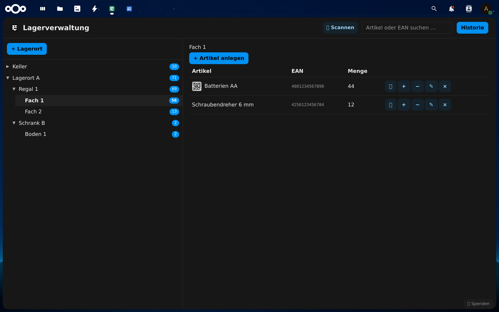
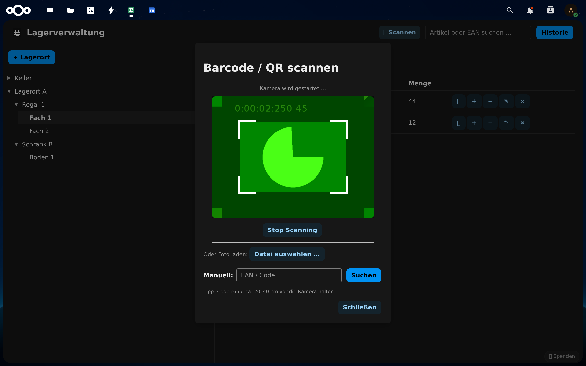
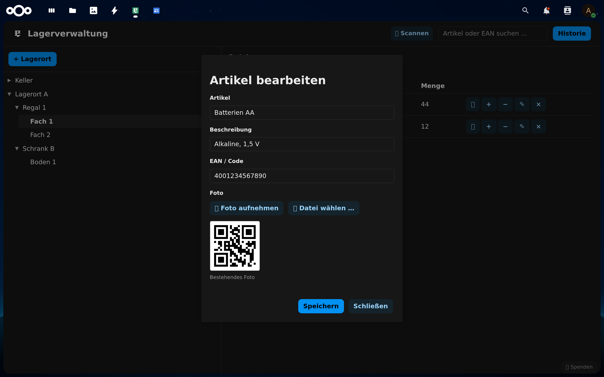
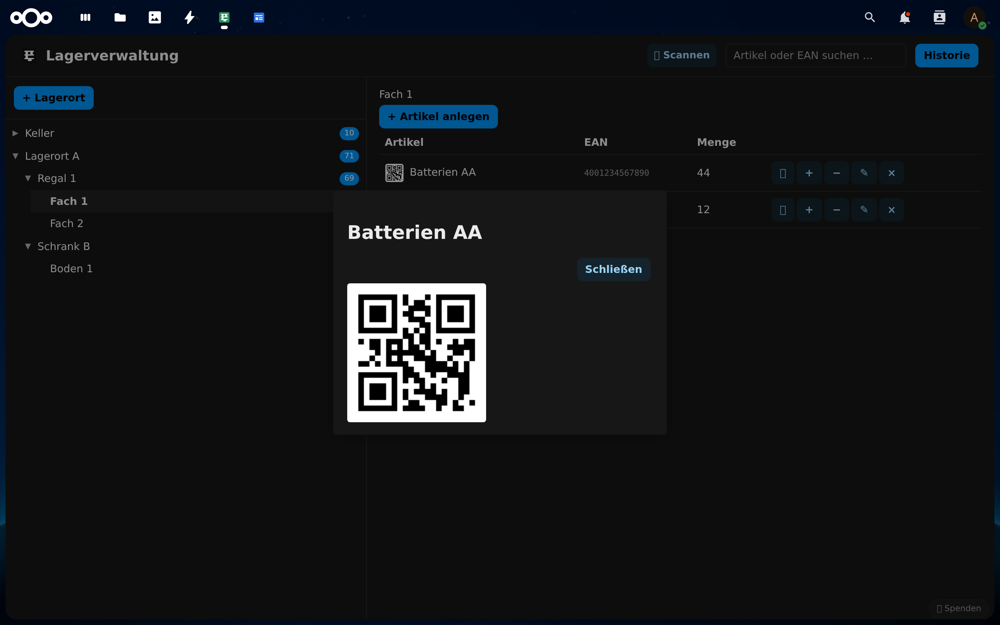
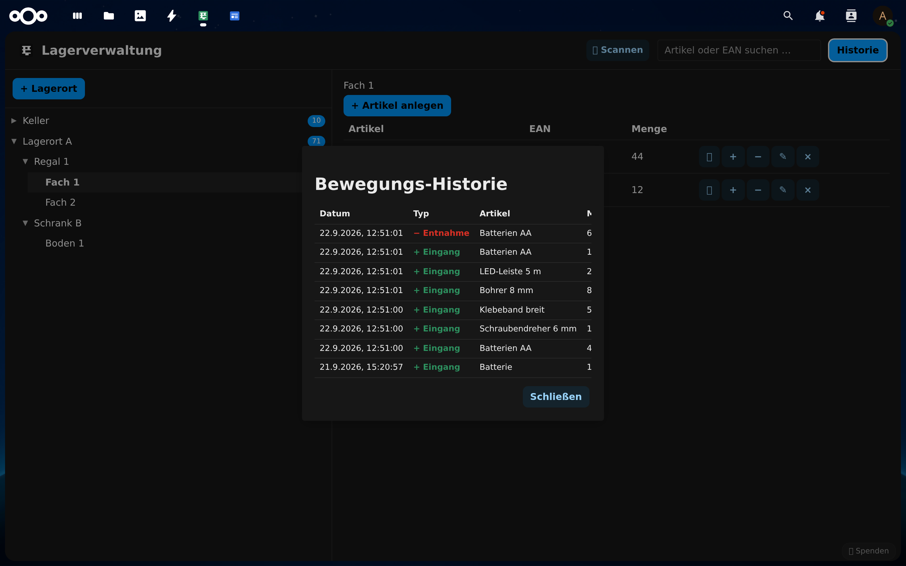
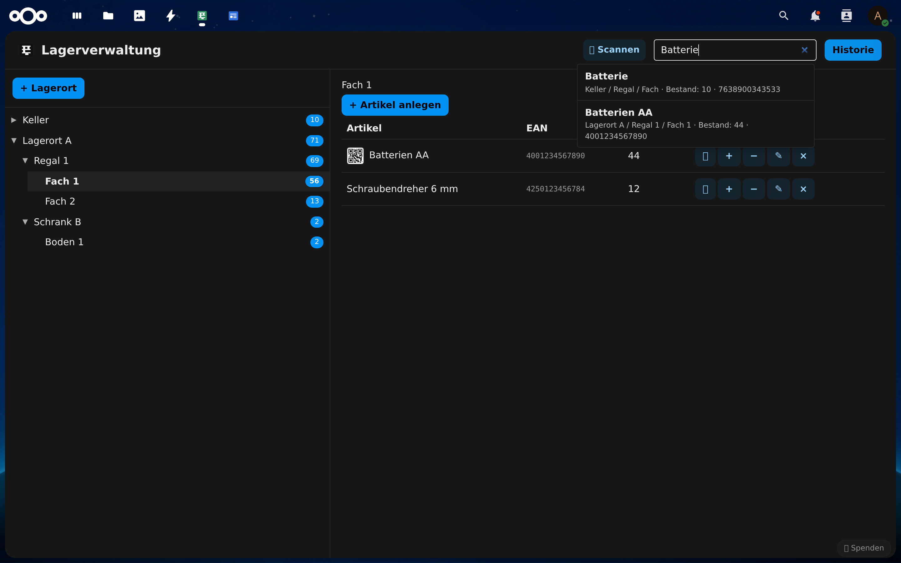

Screenshots
Echte Screenshots aus der App – von der Lagerstruktur über den Cam-Scanner bis zur Bewegungs-Historie.






Funktionen
Lagerstruktur
Lagerorte mit Regalen/Schränken und Fächern/Flächen – beliebig viele, umbenennbar und löschbar.
Artikel & Fotos
Name, Beschreibung, EAN/Code und optional ein Foto – direkt mit der Kamera aufnehmen oder Datei hochladen.
Cam-Scanning
QR-Codes, EAN-13 und EAN-8 live mit der Kamera scannen. Rückkamera als Standard, wählbar bei mehreren Kameras.
Foto-Scan
Code aus einem Foto oder einer Datei erkennen – robust, inkl. Entzerrung schräger Aufnahmen.
Buchungen
Wareneingang und Entnahme mit Menge, Notiz und Benutzer – jederzeit nachvollziehbar in der Historie.
Suche & Codes
Suche nach Artikel oder EAN (Groß-/Kleinschreibung egal) und QR/Barcode-Erzeugung für jeden Artikel.
Installation
Über den App-Store (empfohlen):
- In Nextcloud zu Apps wechseln und „Lager" suchen.
- „Installieren und aktivieren" klicken – fertig.
Manuell:
- Repository klonen oder herunterladen:
git clone https://github.com/wenigdigital/lager.git - Den Ordner nach
nextcloud/apps/lager(oderapps-extra/lager) kopieren. - App im Admin-Bereich aktivieren.
Voraussetzungen: Nextcloud 26–34, PHP 8.1–8.4. Für das Cam-Scanning ein moderner Browser mit Kamera-Zugriff (Chrome/Edge, Firefox).
Gefällt dir die App?
Dann unterstütze die Weiterentwicklung gerne mit einer kleinen Spende – danke für dein Feedback und deine Ideen!
💙 Spenden über PayPal